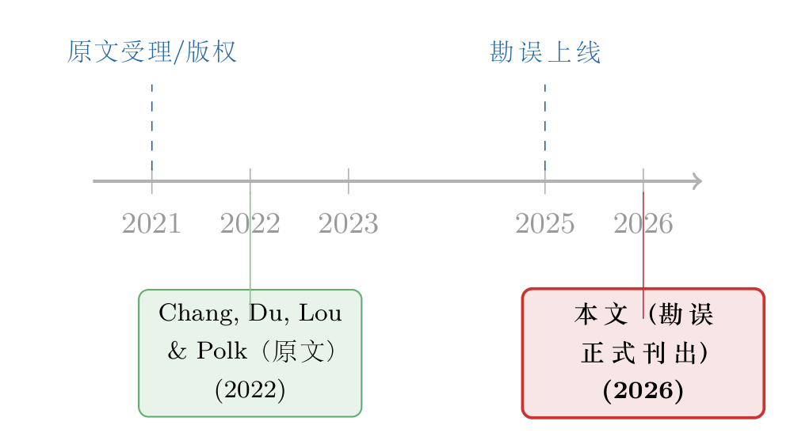

一个被修正的「typo」：当 JFE 的勘误，改的其实不是错别字
本文读的是 Chang, Du, Lou & Polk (2026, Journal of Financial Economics) 发表的一则勘误 (corrigendum)。它给 2022 年那篇名作《Ripples into Waves: Trade Networks, Economic Activity, and Asset Prices》改了一个字——把第 226 页的「more central countries」改成「more central countries and regions」。一个看似微不足道的措辞订正，背后却牵出两件事：一是一条把「贸易网络」和「资产价格」缝在一起的研究脉络，二是学术写作里一个常被忽略、却并不中性的用词习惯。
1 引言：一篇只改了三个词的论文
学术期刊上有一类「论文」，它本身几乎没有任何新内容——勘误 (corrigendum)。它不报告新数据，不跑新回归，不给新结论；它只做一件事：把已发表论文里的某个错误，正式地、留痕地改过来。
这一篇就是如此。Journal of Financial Economics 第 175 卷（2026 年）第 104201 号，作者是 Jeffery (Jinfan) Chang、Huancheng Du、Dong Lou、Christopher Polk——正是 2022 年那篇被引甚广的《Ripples into Waves》的原班人马。勘误的全文短到可以一口气读完：他们说，原文第 226 页 4.1.1 节第 3 行有一处「未被改正的排印错误 (typographical error)」，原句是
"one would expect that more central countries in the network, such as Singapore, Hong Kong, China, United States, and the United Kingdom ..."
应当订正为
"one would expect that more central countries and regions in the network, such as Singapore, Hong Kong, China, United States, and the United Kingdom ..."
然后是一句礼貌的致歉，全文终。
读到这里，一个自然的问题是：这值得专门发一则勘误吗？改动只有两个英文单词（"and regions"）。如果你只把它当成校对疏漏，那它确实平淡无奇。但如果你停下来想想到底改了什么，会发现这远不是一个「错别字」那么简单。
2 真正被修正的，是一个分类
我们把那串清单拿出来看：Singapore、Hong Kong、China、United States、United Kingdom。新加坡、美国、英国是主权国家 (sovereign states)，中国也是。但 Hong Kong（香港） 不是国家——它是中国的一个特别行政区 (Special Administrative Region)。原文把这五者一律称作「countries（国家）」，在分类上就出了问题：你不能把一个地区和若干国家并列着、统称为「国家」。
订正后的「countries and regions」——对应中文里非常标准的表述「国家和地区」——恰好化解了这个问题：清单里既有国家，也有地区，于是「more central countries and regions」就把香港这样的经济体妥帖地包含了进来，而不再隐含「香港是一个国家」的说法。
「国家和地区 (countries and regions)」是中文官方与学术语境里处理这类清单的通行写法。凡是清单中同时含有主权国家与非主权经济体（如香港、台湾、澳门）时，用「国家和地区」而非「国家」，是一种既准确又稳妥的表述。这则勘误本质上是把原文拉回到这一惯例上来。
所以，把它叫作「typographical error（排印错误）」其实是个温和的说法。排印错误通常指拼写、标点、漏字这类机械失误；而这里改的是一个分类口径——是 substantive 的措辞，而非手滑。三位作者分别供职于香港中文大学（深圳）、中央财经大学和伦敦政经，对这层用词的敏感再自然不过。与其说这是「改错别字」，不如说是把一处表述校准到了应有的精度。
值得一提的是，它丝毫不影响原论文的任何结论。被改的那句话出现在 4.1.1 节，是在举例说明「贸易网络中越中心的经济体，越应该具有某种性质」——清单只是举例，把「countries」换成「countries and regions」，回归系数、显著性、机制，一个都不会动。这也是为什么它能以一则纯措辞勘误的形式安静地发表。
3 那篇被修正的论文，到底在讲什么
既然勘误本身没有新内容，真正值得花笔墨的，是它所附着的那篇母论文——《Ripples into Waves: Trade Networks, Economic Activity, and Asset Prices》（Chang, Du, Lou & Polk, 2022, JFE 145(1): 217–238）。被订正的那句话之所以会谈到「越中心的经济体」，正是因为这篇论文的核心，就是一张国际贸易网络 (international trade network)。
它的故事可以这样讲。
首先，国与国之间通过进出口连成一张网：A 国是 B 国的出口目的地，B 国又是 C 国的供应方……一笔需求冲击不会停在原地，而是顺着贸易链条一圈圈扩散开去——这正是标题里「ripples into waves（涟漪汇成波浪）」的意象：一处经济活动的微小扰动，经由贸易网络层层传导、累积放大。
接着，一个自然的问题是：如果实体经济的冲击会沿着贸易网络传播，那么资产价格会不会也沿着同一张网传播？换句话说，一个国家的股市，能不能被它的贸易伙伴的近期表现所预测？这就把一个国际贸易/宏观的问题，转化成了一个标准的资产定价问题——横截面收益可预测性 (cross-sectional return predictability)。
然后，关键在于「中心性 (centrality)」。在一张网络里，节点的地位并不平等：有的经济体处在贸易往来的枢纽位置，连接四方；有的则相对边缘。被勘误订正的那句话，正是在刻画这一点——越是处在网络中心的经济体（如新加坡、香港、中国、美国、英国），越是冲击传导的「集散地」，它们的角色与边缘经济体截然不同。一张网络的拓扑结构，于是被翻译成了一组可度量的、随时间变化的预测变量。
但真正让这类研究有意思的一步，是信息扩散的「时滞」。如果市场是完全有效的、信息瞬间被定价，那么贸易伙伴的冲击应当在同一时刻就反映进本国股价，根本不会留下可预测的痕迹。可现实里，投资者对「与自己有贸易往来的遥远经济体发生了什么」往往反应迟缓——注意力是有限的，信息是逐步消化的。于是涟漪传到资产价格上时是缓慢的，缓慢就意味着可预测：贸易上游的好消息，会以可观测的滞后，渗透到下游经济体的股票收益里。
这套「网络近邻的过去 → 预测你的未来」的逻辑，并不是国际贸易独有的。它和近年公司金融、资产定价里一大批「同行/网络溢出可预测性」的研究同源。比如把同行效应按强弱与方向「折叠」起来去做横截面预测（可参见《强邻、弱邻，和你站的位置：被「折叠」起来的同行效应》），又比如创新如何沿着地理与技术网络外溢（可参见《天线效应：硅谷为什么离不开波士顿？》）。换一张网络、换一个节点，故事的骨架是相通的：有限注意 + 网络结构 = 缓慢扩散的可预测性。
[!warning] 必须诚实地说明：这则勘误的正文里没有任何系数、t 值或样本量——它就是一段措辞订正。母论文《Ripples into Waves》的具体回归量级（如基于贸易网络构造的预测变量对未来收益的系数大小），不在本次所给的勘误材料之内，因此本文不复述任何具体数字，以免张冠李戴。想要核对量级的读者，应回到 2022 年原文（JFE 145(1): 217–238）。
4 文献脉络：从一则勘误看一条研究线
把视角拉远，这则 2026 年的勘误其实是一条研究线上的一个「售后」节点。这条线大致是这样长出来的。
母论文《Ripples into Waves》于 2022 年 7 月发表在 JFE 第 145 卷；按版权页，其手稿的处理可上溯到 2021 年（原文 DOI 标注的接收/版权年份）。它把「贸易网络 → 实体经济活动 → 资产价格」三者串成一条因果与预测的链条，是「网络与可预测性」这一大主题在国际宏观-资产定价交叉口的一次落地。
接着，论文发表之后的若干年里，作者（或读者）注意到了第 226 页那处把香港与诸国并称「countries」的措辞。于是在 2025 年 11 月 13 日，勘误先行上线 (available online)；2026 年正式刊出于第 175 卷。一篇论文的生命周期，因此不止于「发表」那一刻——它还包括后续的订正、回应与校准。这本身就是学术规范运作的一部分。

换句话说，这条「脉络」与其说是若干篇论文的接力，不如说是同一篇论文的自我修订史：从手稿、到正式发表、再到事后勘误。它提醒我们，已发表 ≠ 定稿，白纸黑字也允许被郑重地改正。
5 评论与延伸（Q&A + 研究方向）
(a) 几个可能的疑问
Q：一处只加了「and regions」两个词的改动，凭什么要走正式勘误的流程？
因为期刊论文一经发表即成为不可私自篡改的学术记录 (version of record)。任何对正式文本的更动——哪怕只有两个词——都必须留痕、署名、公开，才能既订正错误又保全可追溯性。勘误正是这套机制的载体。把它发出来，恰恰说明作者与期刊把「准确」看得很重。
Q：这真的是「排印错误 (typographical error)」吗？
严格说，更像是一处用词/分类口径的订正，而非机械的拼写手滑。把香港与若干主权国家并称为「countries」，问题出在分类层面；改成「countries and regions」是把表述校准到「国家和地区」这一通行惯例。作者用了「typographical error」这个相对温和的措辞，但改动的实质是措辞精度，而不是字母拼错。
Q：这次订正会不会动摇原论文的任何结论？
不会。被改的句子位于 4.1.1 节，是在举例说明「网络中心性高的经济体应具备某种性质」，清单只是例证。把「countries」换成「countries and regions」不涉及任何变量构造、回归设定或样本，因此系数、显著性、机制一概不变。
Q：为什么偏偏是这几位作者会做这样的订正？
三位作者分别在香港中文大学（深圳）、中央财经大学（北京）和伦敦政经任职。对「国家和地区」这一表述的敏感，对身处中国学术语境的研究者而言是自然而然的。与其说这是被动纠错，不如说是主动把文本拉回到应有的准确与稳妥。
Q：作为读者，我能从这则勘误里学到什么方法论上的东西？
至少两点。其一，写涉及多个经济体的清单时，若其中含有非主权经济体，用「countries and regions / 国家和地区」是更稳妥的默认写法。其二，论文发表不是终点：发现错误后，正确的做法是走勘误，而不是装作无事——学术诚信体现在事后的态度上。
Q：勘误（corrigendum）和更正（erratum）、撤稿（retraction）是一回事吗？
不是。一般而言，corrigendum 指作者方面的错误订正，erratum 指出版方（排版/印刷）造成的错误，而 retraction（撤稿）则用于结论不可靠、需整体收回的严重情形。本文属于第一类，是程度最轻、最常规的一种——它不削弱论文，反而是其严谨性的延续。
(b) 几个可能的研究问题与提案
1）措辞「国别口径」对跨境实证的隐性影响
【经济故事】很多跨国资产定价、贸易、资本流动的研究都要先定义「国家/经济体」的清单。香港、台湾、澳门这类非主权经济体是否被单列、如何归并，会直接改变面板的横截面构成与网络拓扑。一个被随手处理的「口径」，可能悄悄影响中心性度量与回归结果。
【可行性】中。可取若干主流跨国数据集（如贸易流量、跨境持仓），系统比较「把香港并入中国」与「单列香港」两种口径下、网络中心性指标与可预测性结果的稳健性。数据可得，识别上属于稳健性/口径敏感性分析，doable，但贡献偏方法论而非因果。
2）把「贸易网络可预测性」搬到公司债/信用市场
【经济故事】《Ripples into Waves》讲的是股票收益沿贸易网络的缓慢扩散。一个自然的延伸是：贸易上游经济体的冲击，会不会以同样的滞后渗透进下游经济体企业的信用利差？信用市场参与者更机构化、对宏观链条的关注可能不同，扩散速度未必与股市一致。
【可行性】中。需要跨国公司债利差数据（如 ICE BofA、TRACE 之于美国、对应的国际样本）叠加双边贸易矩阵。识别上沿用母论文的网络预测变量构造即可，难点在于跨国信用数据的覆盖与可比性。方向清晰，落地有数据门槛。
3）外资持有人作为「涟漪」的传导中介
【经济故事】贸易冲击要变成资产价格的波浪，需要有人去交易。一个待检验的机制是：外资持有人 (foreign investors) 是否正是把贸易伙伴信息搬运进本国市场的渠道——外资占比越高的市场，贸易网络的可预测性是否消退得越快（因为信息被更快定价）？
【可行性】中。需要分国家、分时段的外资持股/持债比例数据，与贸易网络变量交互。识别策略可用「外资占比」作为信息整合速度的代理，做异质性回归。数据零散但并非不可得；内生性（外资偏好流向哪类市场）需要小心处理。
4）勘误本身作为研究对象：金融学论文的「事后订正」图谱
【经济故事】哪些论文更容易被勘误？是高被引的、还是数据密集的？订正集中在结论、数据，还是像本文这样的措辞？把金融学顶刊的全部 corrigenda/errata 做成一个数据集，可以刻画这个学科的「自我纠错」行为。
【可行性】高。期刊网站与 Crossref 元数据可系统抓取勘误条目，匹配到母论文的被引、主题、数据类型。纯描述性也已有价值，doable 程度高，且是一个干净的小课题。
6 我的判断
先说贡献。作为一则勘误，它的「学术贡献」按常规标准近乎为零——没有新数据、新方法、新结论。但它的规范价值不为零：它示范了发表后发现表述瑕疵时的正确处理方式，也把一处涉及「国家与地区」的措辞校准到了应有的精度。在「已发表即定稿」的惯性认知里，这样的留痕订正是健康的。
再说我对它的「识别担忧」——对一则措辞勘误而言，这个词本不适用，但可以换个角度问：这次订正是否充分？我的看法是，它只补了第 226 页这一处，但原文若在别处也以「countries」笼统统称同类清单，是否同样需要校准，勘误没有交代。一处订正容易，全文一致更难。
最后，我想看到的后续，其实与这则勘误关系不大，而与那篇母论文有关：把「贸易网络 → 缓慢扩散 → 可预测性」这条线，认真地推进到信用市场与外资持有人这一侧去。母论文已经证明涟漪能在股市汇成波浪；下一步真正值得做的，是看清这股波浪在债市里、以及在「谁在交易」这件事上，究竟会以怎样的速度与形状传播开来。
参考文献
- Chang, J. (Jinfan), Du, H., Lou, D., & Polk, C. (2022). Ripples into Waves: Trade Networks, Economic Activity, and Asset Prices. Journal of Financial Economics 145(1), 217–238.
- Chang, J. (Jinfan), Du, H., Lou, D., & Polk, C. (2026). Corrigendum to "Ripples into Waves: Trade Networks, Economic Activity, and Asset Prices" [Journal of Financial Economics, Volume 145, (July 2022) Pages 217–238]. Journal of Financial Economics 175, 104201.